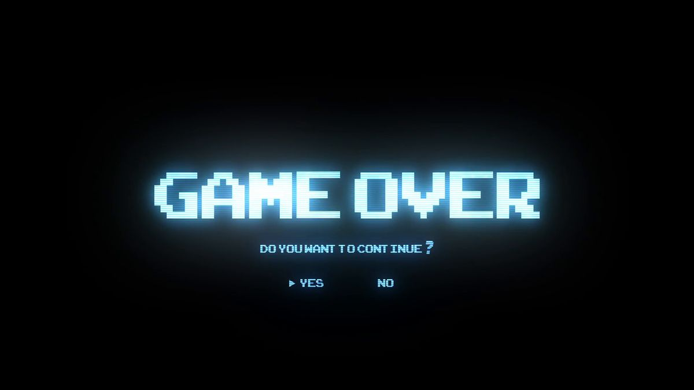
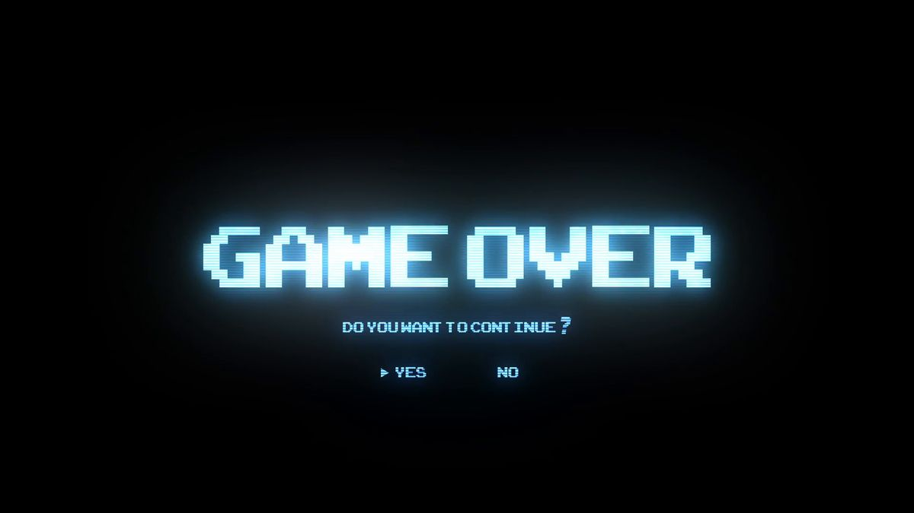

White-Hat Hacker Skills
Ein White-Hat-Hacker verfügt über ein breites und tiefes Spektrum an technischen Fähigkeiten, die weit über das normale IT-Wissen hinausgehen. Er besitzt ein fundiertes Verständnis moderner Betriebssysteme wie Linux, Windows und macOS und weiß genau, wie diese intern funktionieren, von Dateisystemen über Benutzerrechte bis hin zu Speicher und Prozessverwaltung. Ebenso beherrscht er Netzwerktechnologien bis ins Detail: Er kennt Protokolle wie TCP/IP, HTTP, DNS oder SSH, versteht deren typische Schwachstellen und ist in der Lage, den gesamten Datenverkehr zu analysieren, zu interpretieren und sicher zu konfigurieren. Darüber hinaus verfügt ein White-Hat-Hacker über ausgeprägte Kenntnisse in Programmiersprachen wie Python, Bash, JavaScript oder C, was ihm ermöglicht, eigene Tools zu entwickeln, Sicherheitsmechanismen zu testen oder den Code einer Anwendung nach fehlerhaften Stellen zu durchsuchen.
Hack:
Der zentrale Unterschied zwischen White-Hat- und Black-Hat-Hackern liegt darin, wofür sie ihr technisches Wissen einsetzen und unter welchen Bedingungen sie handeln. White-Hat-Hacker arbeiten legal, transparent und mit ausdrücklicher Erlaubnis eines Unternehmens oder Systembesitzers. Ihr Ziel ist es, Sicherheitslücken zu finden, zu melden und zu schließen, um Systeme, Daten und Nutzer zu schützen. Black-Hat-Hacker hingegen nutzen die gleichen oder ähnliche technischen Fähigkeiten, handeln jedoch ohne Genehmigung und verfolgen meist eigennützige oder illegale Ziele. Sie suchen gezielt nach Schwachstellen, um Daten zu stehlen, finanziellen Schaden anzurichten, Systeme zu sabotieren oder sich unbefugt Zugang zu verschaffen. Während White-Hats also für mehr Sicherheit sorgen und nach klaren ethischen Richtlinien arbeiten, stellen Black-Hats eine reale Bedrohung dar, die Sicherheitslücken bewusst für kriminelle Zwecke ausnutzen.


MATH AND SINCE
Mathematik und Physik sind im Programmieren und im legalen Sicherheitstest unverzichtbar, weil sie die technischen Grundlagen vieler Verfahren bilden. Mathematik ermöglicht Algorithmen, Verschlüsselung und KI-Modelle: Matrixgleichungen wie A · x = b, Wahrscheinlichkeiten wie P(A|B) = P(A ∩ B) / P(B) und kryptografische Beziehungen wie c = m^e mod n sind dabei zentrale Werkzeuge. Auch Optimierungsprozesse basieren auf Formeln wie θₙₑᵤ = θₐₗₜ – α ∇L(θ). Physik ist ebenso wichtig, da jede Software auf realer Hardware läuft: elektrische Zusammenhänge wie U = R · I und P = U · I erklären Strom- und Leistungsbedarf, während mechanische und signaltheoretische Modelle – etwa F = m · a oder v = f · λ – in Robotik, Simulationen und Netzwerken eine entscheidende Rolle spielen. So bilden Mathematik und Physik das Fundament für effiziente, sichere und technisch präzise Softwareentwicklung.
Kali Linux
Kali Linux ist ein spezielles Linux-Betriebssystem, das für Sicherheitsforschung, Penetration Testing und digitale Forensik entwickelt wurde. Bei Passwort-Attacken stehen verschiedene Methoden im Vordergrund. Eine verbreitete Methode ist der Brute-Force-Angriff, bei dem automatisch alle möglichen Passwortkombinationen ausprobiert werden, bis das richtige gefunden wird. Eine zweite Methode ist der Dictionary-Angriff, der mit einer Liste echter oder wahrscheinlich genutzter Passwörter arbeitet und so schneller ist. Es gibt auch Hybrid-Angriffe, die Wörterbuchwörter mit Zahlen oder Symbolen mischen, um realistische Passwörter zu simulieren. Eine weitere Methode ist der Credential-Stuffing-Angriff, bei dem gestohlene Logins aus Datenlecks automatisch auf anderen Diensten ausprobiert werden. Außerdem gibt es Phishing-ähnliche Attacken, bei denen ein Opfer selbst sein Passwort eingibt, etwa über gefälschte Hotspots oder Fake-Login-Seiten. All diese Methoden dienen im legalen Rahmen dazu, die Sicherheit eines eigenen Systems zu prüfen, Schwachstellen sichtbar zu machen und Schutzmechanismen zu verbessern.
Merdo of Caney
Mein Game Merdo of Caney befindet sich derzeit noch in aktiver Entwicklung. Das Spiel wird kontinuierlich erweitert, verbessert und optimiert. Mit der Zeit kommen neue Funktionen, Animationen, Mechaniken und Inhalte hinzu, um das Spielerlebnis Schritt für Schritt zu vergrößern.


 
